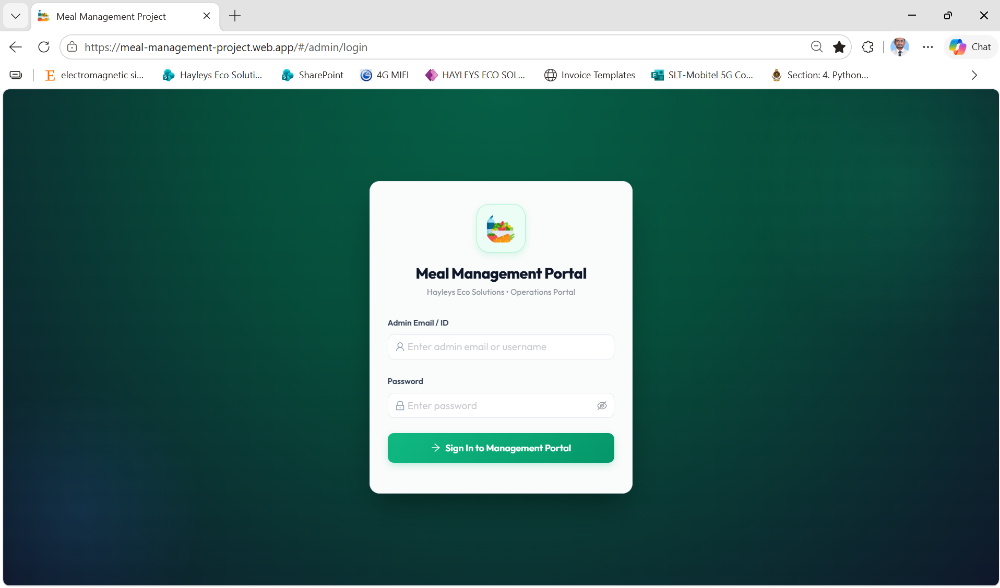
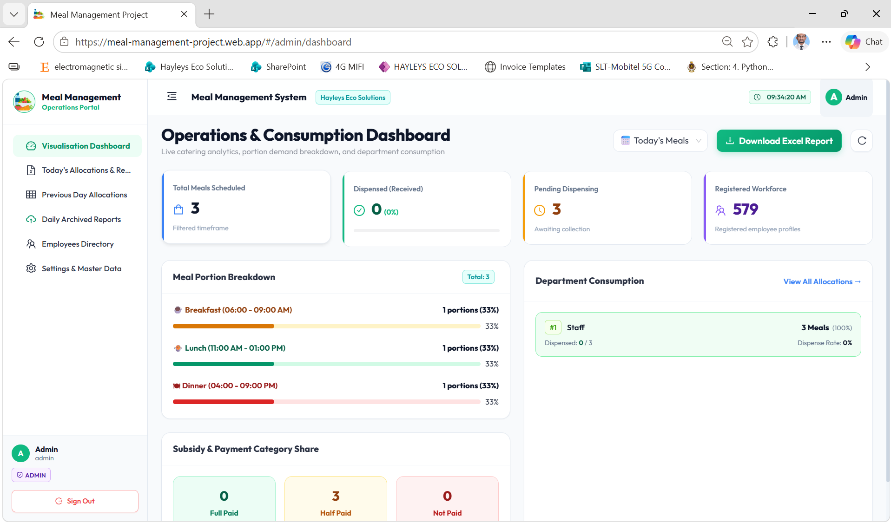
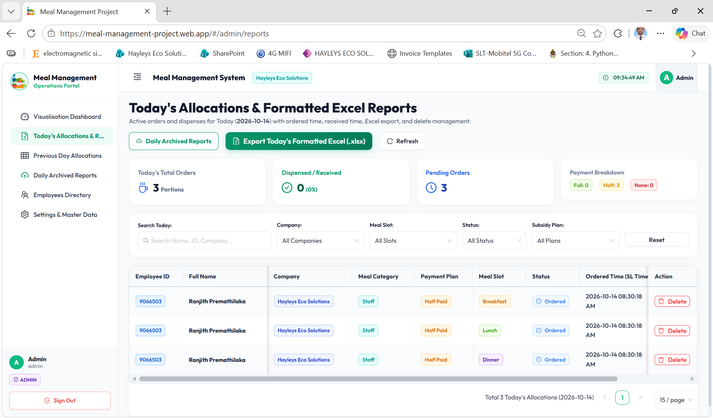
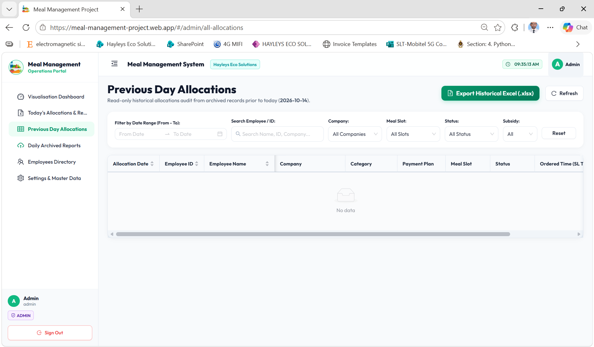
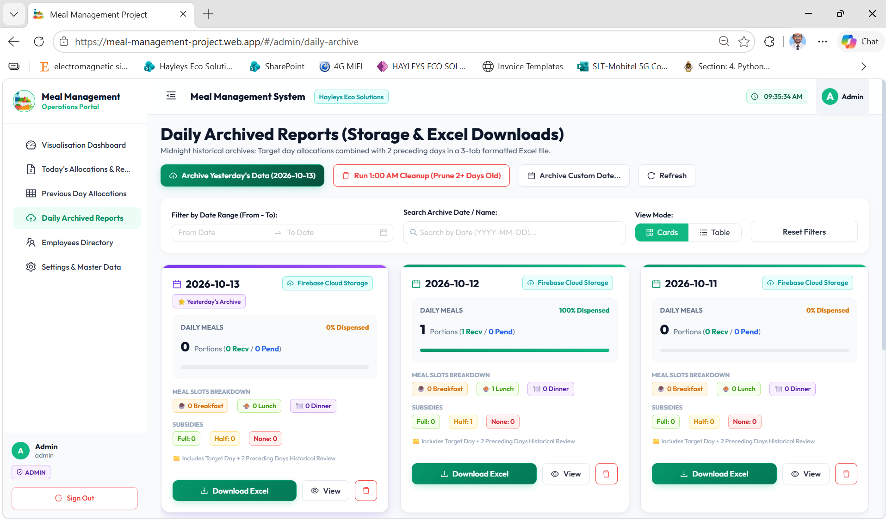
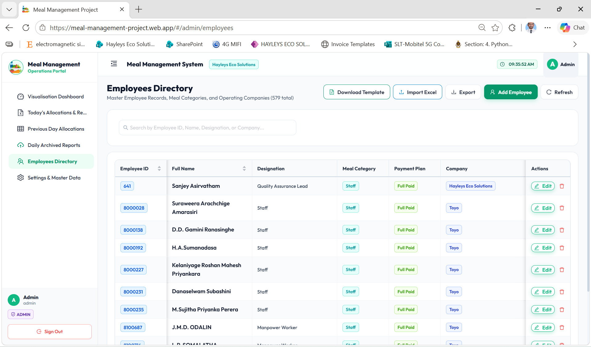
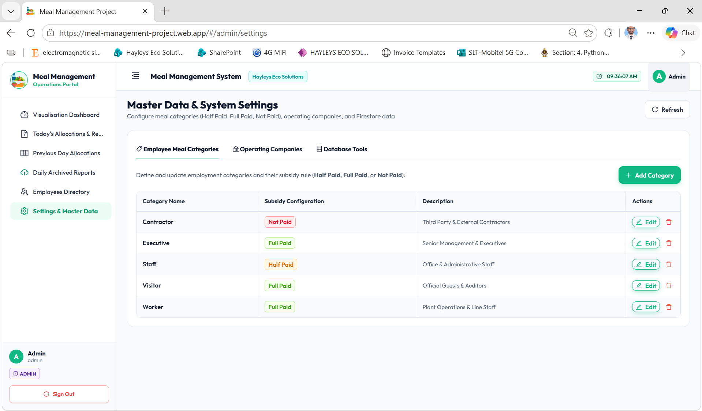

පද්ධති සැකැස්ම සහ අන්තර්ගතය | கணினி கட்டமைப்பு மற்றும் உள்ளடக்க அட்டவணை
📑 Document Directory & Modules
| Module |
System Section & Title |
Route |
| Module 1 |
Secure Portal Authentication & Login |
#/admin/login |
| Module 2 |
Operations & Consumption Dashboard |
#/admin/dashboard |
| Module 3 |
Today's Allocations & Formatted Excel |
#/admin/reports |
| Module 4 |
Previous Day Allocations & Historical Audits |
#/admin/all-allocations |
| Module 5 |
Daily Archived Reports & Cloud Storage |
#/admin/daily-archive |
| Module 6 |
Employees Directory & Excel Bulk Sync |
#/admin/employees |
| Module 7 |
Master Data & Subsidy Rule Settings |
#/admin/settings |
| Appendix |
SOP Checklist, Cutoff Timetable & Contacts |
System Guidelines |
👥 Operational User Roles & Permissions
- Super Administrator: Full control over master data, employee directory, subsidy configurations, company entities, and database tools.
- Plant Catering Supervisor: Real-time allocation monitoring, catering portion summary downloads, and active meal collection audits.
- HR & Payroll Officer: Historical allocation auditing, Excel exports for payroll deduction reconciliation, and bulk employee roster imports.
🕒 Factory Meal Slots & Operational Cutoffs
| Breakfast |
06:00 AM – 09:00 AM |
Order Cutoff: 09:00 AM |
| Lunch |
11:00 AM – 01:00 PM |
Order Cutoff: 11:00 AM |
| Dinner |
04:00 PM – 09:00 PM |
Order Cutoff: 04:00 PM |
💡
System Compatibility: Built for modern web browsers (Google Chrome, Microsoft Edge, Mozilla Firefox) with responsive design optimized for desktop workstations, tablets, and mobile admin review.
ආරක්ෂිත පරිපාලක පිවිසුම | பாதுகாப்பான நிர்வாக நுழைவு
🔐 Accessing the Management System
The web portal is protected by role-based authentication. Only authorized administrative personnel, HR executives, and catering supervisors are issued operational credentials.
1
Open browser and navigate to https://meal-management-project.web.app/#/admin/login.
2
Enter your registered Admin Email or ID into the first input field.
3
Type your secure password and click "Sign In to Management Portal".
🛡️ Security Highlights
- SSL Encryption: 256-bit HTTPS secure transport.
- Auto Redirect: Logged-in admins are automatically redirected to the live Operations Dashboard.
- Invalid Attempt Alerts: Clear error notifications for incorrect credentials.

Figure 1.1: Web Management Portal Secure Login Interface (web1.png)
සජීවී මෙහෙයුම් සහ පරිභෝජන උපකරණ පුවරුව | நேரடி செயல்பாடுகள் & நுகர்வு டாஷ்போர்டு
📊 Real-time Operational KPI Metrics
Provides catering managers and plant supervisors with instant, live visibility into workforce meal demands:
- Total Meals Scheduled: Total meal orders booked across the selected timeframe.
- Dispensed (Received): Real-time count and percentage of meals verified at the counter.
- Pending Dispensing: Meals currently awaiting collection by plant employees.
- Registered Workforce: Total enrolled employees across all entities (579+ active).
📈 Live Breakdown Visualizations
- Portion Demand Breakdown: Real-time progress bars for Breakfast (06:00-09:00 AM), Lunch (11:00 AM-01:00 PM), and Dinner (04:00-09:00 PM).
- Designation Consumption: Tracks portion distributions per designation with completion rates.
- Subsidy Share: Visual distribution across Full Paid, Half Paid, and Not Paid.
- Export: Instant "Download Excel Report" button.

Figure 2.1: Live Operations & Consumption Dashboard Interface (web2.png)
අද දින ආහාර වෙන්කිරීම් සහ එක්සෙල් වාර්තා | இன்றைய உணவு ஒதுக்கீடுகள் & எக்செல் அறிக்கைகள்
📋 Real-time Order Monitoring & Management
Enables catering teams to view and verify every employee meal scheduled for today in real-time:
- Table Details: Displays Employee ID, Full Name, Operating Company, Meal Category, Subsidy Plan, Meal Slot, Status (Ordered/Dispensed), and Exact Booking Time.
- Multi-Dimensional Filters: Instant search by Employee Name/ID, Company dropdown, Meal Slot filter, Status filter, and Subsidy Plan filter.
- Order Cancellation: Dedicated "Delete" button to remove erroneous bookings upon verified request.
📑 Standardized Formatted Excel Export
Click "Export Today's Formatted Excel (.xlsx)" to generate an official print-ready spreadsheet containing:
- Summary breakdown headers for catering contractor handoff.
- Alphabetical employee roster segmented by meal slots.
- Signature verification columns for physical counter dispensing.

Figure 3.1: Today's Allocations Table & Filter System (web3.png)
පෙර දින වෙන්කිරීම් විගණනය | முந்தைய நாள் ஒதுக்கீடுகள் மற்றும் தணிக்கை
🔍 Historical Allocation Audit Engine
Allows HR, finance, and plant management to inspect and audit past meal allocations without risking active operational data:
- Date Range Selector: Flexible "From Date" to "To Date" calendar pickers to query any historical fiscal period.
- Employee Audit Lookup: Search by Employee ID or Name to review individual attendance and meal claim records.
- Company & Subsidy Auditing: Filter historical records by Company entity and Subsidy tier.
📥 Historical Excel Export
Click "Export Historical Excel (.xlsx)" to produce consolidated audit files utilized for:
- Monthly payroll meal deductions and catering cost reconciliations.
- External catering invoice validation and discrepancy resolution.
- Compliance reporting for internal and external corporate audits.

Figure 4.1: Historical Allocations Query & Audit Interface (web4.png)
දෛනික ලේඛනාගාර වාර්තා සහ ක්ලවුඩ් ගබඩාව | தினசரி காப்பக அறிக்கைகள் & கிளவுட் சேமிப்பு
🗄️ Automated Multi-Day Archival Architecture
Automated midnight routines ensure database performance while preserving permanent compliance archives:
- 3-Day Consolidated Excel: Each daily archive compiles target day allocations combined with the 2 preceding days into a structured multi-tab Excel workbook.
- Firebase Cloud Storage: Archives are securely uploaded to cloud storage with immutable download links.
- 1:00 AM Auto-Cleanup: Automatically prunes temporary active allocations older than 2 days to maintain blazing system performance.
⚙️ On-Demand Archival Tools
- "Archive Yesterday's Data": One-click manual backup trigger.
- "Archive Custom Date...": Creates an archive for any arbitrary historical date on request.
- "Run 1:00 AM Cleanup": Manual purge for test or redundant data.
- Card View: Visual cards detailing daily portions, dispense rate %, meal slot breakdowns, and direct Excel download.

Figure 5.1: Daily Archived Reports Cards & Storage Manager (web5.png)
සේවක නාමාවලිය සහ එක්සෙල් සමමුහුර්තකරණය | பணியாளர் அடைவு & எக்செல் ஒத்திசைவு
👥 Centralized Workforce Master Database
Maintains employee profiles for 579+ factory workers, staff, and contractors across all operating entities:
- Profile Fields: Employee ID, Full Name, Designation, Meal Category (Staff, Worker, Executive, Contractor), Payment Plan (Full Paid, Half Paid, Not Paid), and Company.
- Instant Search: Find any employee in milliseconds by typing their ID, name, or company.
- Profile Modification: In-line "Edit" and "Delete" buttons for employee maintenance.
📊 Bulk Roster Excel Operations
- "Download Template": Downloads a pre-formatted standardized template for workforce data.
- "Import Excel": Instant bulk upload of new employee lists from HR systems without manual data entry.
- "Export": Generates a full workforce roster export in seconds.
- "Add Employee": Form modal to manually enroll individual new hires.

Figure 6.1: Employees Master Directory & Bulk Synchronization Tools (web6.png)
ප්රධාන දත්ත සහ සහනාධාර ප්රතිපත්ති සැකසුම් | முதன்மை தரவு & மானிய அமைப்புகள்
🏷️ Category Subsidy Policy Matrix
Configures company meal subsidy rules that automatically apply during employee booking:
| Meal Category |
Subsidy Plan |
Target Employee Group |
| Worker |
Full Paid |
Plant Operations & Line Staff |
| Staff |
Half Paid |
Office & Administrative Staff |
| Executive |
Full Paid |
Senior Management & Executives |
| Visitor |
Full Paid |
Official Guests & Auditors |
| Contractor |
Not Paid |
Third Party & External Contractors |
🏢 Operating Companies & Database Tools
- Operating Companies Tab: Manage entities under the Hayleys Eco Solutions umbrella (e.g. Hayleys Eco Solutions, Toyo, etc.).
- Database Tools Tab: Routine database re-indexing, cache invalidation, and data integrity verification utilities.
- "Add Category": Quickly add new employee classifications with custom subsidy entitlement.

Figure 7.1: Master Data & Category Subsidy Configuration Interface (web7.png)
දෛනික මෙහෙයුම් පිරික්සුම් ලැයිස්තුව | தினசரி செயல்பாட்டு சரிபார்ப்பு பட்டியல்
⏰ Daily Operational Timeline for Catering & Plant Supervisors
09:15
Breakfast Cutoff Verification: Review breakfast portions on Dashboard. Click "Export Today's Formatted Excel" on Reports page for kitchen headcount.
11:15
Lunch Cutoff Verification: Finalize lunch counts immediately after the 11:00 AM cutoff. Dispatch headcount to the central kitchen.
16:15
Dinner Cutoff Verification: Verify night shift orders after 04:00 PM cutoff. Print the verified delivery sheet.
23:59
Automated Archival: Nightly cron automatically compiles the 3-day consolidated Excel archive and triggers 1:00 AM storage maintenance.
💡 Common Troubleshooting Tips
- Order Not Appearing: Check if the employee confirmed the booking before the slot cutoff time.
- Duplicate Order Warning: The system strictly permits one portion per meal slot per day to prevent double-booking.
- Worker Not Found: Check the Employees Directory to ensure the employee is registered under active status.
- Export Excel Failure: Ensure pop-up blockers are disabled in your browser.
📞 Technical Support & Administration Contacts
| Plant Operations Helpdesk |
Internal Ext. 2104 / plant.ops@hayleys.com |
| IT Systems Administrator |
Internal Ext. 3340 / itsupport@hayleys.com |
| Catering Contractor Inquiries |
catering.office@hayleys.com |
| System Portal URL |
https://meal-management-project.web.app |
🌿
Hayleys Eco Solutions Commitment: This digital meal management platform eliminates food waste, optimizes kitchen resource allocation, and ensures fair, transparent nourishment for our entire workforce.